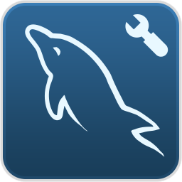
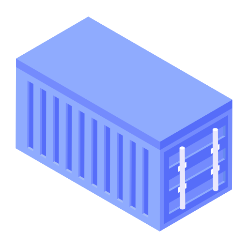

4. Claude Code cho Developer
/
Lab - Nâng cấp quy trình làm việc với Skill và Sub-Agent
Tiếp nối 2 bài lab trước: Bài lab này dùng lại project D:\lab-expense-management — đã được khởi tạo ở bài lab "Khởi tạo project Expense Management" và đã được tái cấu trúc + có file CLAUDE.md ở bài lab "Tổ chức project và định nghĩa quy tắc làm việc thông qua CLAUDE.md". Nếu chưa hoàn thành 2 bài đó, hãy quay lại thực hiện trước.
Giới hạn hiện tại của project
- Chưa hỗ trợ multi-user. Vì chưa có quy tắc thiết kế Entity cho Prisma, Claude Code "tự biên tự diễn" và chọn phương án đơn giản nhất: chỉ 2 bảng
Category và Expense. Không có User, không có khái niệm sở hữu dữ liệu, không có soft delete.
- Chưa có phong cách thiết kế UI. Không responsive, không có bảng màu thống nhất, không có quy tắc font chữ, không có quy ước dùng Icon/Emoji. Mỗi màn hình sinh ra một kiểu khác nhau.
- Giao diện quá xấu! Vì ta yêu cầu Claude implement tính năng nhưng không đưa layout, không có mockup, không có quy tắc chuyển màn hình (screen transition). Claude buộc phải "đoán" giao diện.
- Phụ thuộc quá nhiều vào kỹ thuật prompt. Mọi tiêu chuẩn đang nằm trong đầu người viết prompt. Chỉ cần quên một dòng, tính năng mới sẽ lệch chuẩn so với phần đã làm trước đó (đặt tên, cấu trúc thư mục, kiểu dữ liệu, cách trả lỗi API...).
Vì sao CLAUDE.md chưa đủ? CLAUDE.md luôn được nạp vào context ở mọi phiên làm việc, nên nó chỉ nên chứa những quy tắc chung nhất. Nếu nhét cả tiêu chuẩn thiết kế UI, quy tắc Prisma, chuẩn OpenAPI vào đó, file sẽ phình to, tốn token và các rule quan trọng bị "loãng".
Skill giải quyết đúng vấn đề này: nội dung chi tiết chỉ được nạp khi task thật sự cần đến.
Mục tiêu
- Dùng tính năng Skill creator có sẵn của Claude Code để tạo 4 Skill chuyên biệt:
frontend-coding, api-design, backend-coding, database-design.
- Dùng lệnh
/agents (Agent creator) để tạo 2 Sub-agent: api-testing và database-migrate.
- Áp dụng bộ Skill + Sub-agent vừa tạo để tái cấu trúc project thành một ứng dụng quản lý chi tiêu multi-user, multi-account, multi-category thực thụ — cả database, frontend lẫn backend.
- Cảm nhận rõ sự khác biệt: cùng một prompt ngắn, kết quả trước và sau khi có Skill khác nhau như thế nào.
Mô hình kiến trúc
flowchart TD
Dev(("
 Developer
Developer"))
CC["
 Claude CodeAgent chính
Claude CodeAgent chính"]
MD["📄
CLAUDE.mdRule chung, luôn nạp"]
subgraph Skills["📂 .claude/skills/ — nạp theo ngữ cảnh"]
SK1["🎨
frontend-codingTailwind · Lucide
Responsive · Color palette"]
SK2["📘
api-designOpenAPI 3.0
theo cụm chức năng"]
SK3["⚙️
backend-codingAPI path · HTTP method
Query param · Prisma query"]
SK4["🗄️
database-designPrisma model rule
Decimal · Enum · Index"]
end
subgraph Agents["📂 .claude/agents/ — context riêng biệt"]
AG1["
api-testingsinh & chạy k6 script"]
AG2["

database-migrateprisma migrate · seed"]
end
subgraph Project["lab-expense-management/"]
Src["
 src/
src/app/ · api/ · components/"]
PrismaDir["🔗
prisma/schema · migrations · seed"]
Docs["📁
docs/api-spec/ · mockup/"]
TestDir["🧪
test/k6 script"]
end
DB[("

MySQLDocker container")]
Dev -->|"Giao task bằng prompt ngắn"| CC
CC --> MD
CC -.->|"khớp description → nạp nội dung"| Skills
Skills -.->|"áp tiêu chuẩn khi Code"| Src
SK4 -.-> PrismaDir
SK2 -.-> Docs
CC -->|"gọi sau khi Code xong"| AG1
CC -->|"gọi khi schema đổi"| AG2
AG1 --> TestDir
TestDir -->|"k6 run → HTTP request"| Src
AG2 --> PrismaDir
PrismaDir --> DB
Src --> DB
Skill là "tiêu chuẩn" — được nạp vào context của agent chính khi task khớp mô tả, để code sinh ra đúng chuẩn ngay từ đầu. Sub-agent là "người thợ riêng" — chạy trong context độc lập, làm xong trả về kết quả tóm tắt, không làm bẩn context của agent chính.
Yêu cầu trước khi bắt đầu
- Project
D:\lab-expense-management chạy được (npm run dev), MySQL container đang hoạt động, file CLAUDE.md đã có ở root.
- Grafana k6 đã cài đặt để chạy test script — kiểm tra bằng
k6 version. Nếu chưa có, cài bằng winget install k6 --source winget.
- Một công cụ để tạo mockup màn hình (Figma, Excalidraw, Drawio, hoặc đơn giản là ảnh chụp/vẽ tay). Bước tái cấu trúc frontend sẽ cần đến.
Các bước thực hành
Phần 1: Tạo 4 Skill chuyên biệt bằng Skill creator
-
Bước 1: Mở project và khởi động Claude Code
cd D:\lab-expense-management
claude
-
Bước 2: Gọi Skill creator
skill-creator là Skill có sẵn của Claude Code, chuyên dùng để tạo Skill mới đúng cấu trúc (thư mục + SKILL.md + frontmatter hợp lệ). Gọi bằng slash command:
/skill-creator
Hoặc nếu môi trường của bạn chưa có slash command này, chỉ cần prompt trực tiếp — Claude Code sẽ tự kích hoạt Skill creator vì prompt khớp với description của nó:
Tạo giúp tôi một skill mới ở phạm vi project (.claude/skills)
-
Bước 3: Tạo Skill frontend-coding
Skill này giữ cho toàn bộ giao diện có một phong cách duy nhất. Đây là lời giải cho vấn đề "giao diện quá xấu" ở đầu chương.
Tạo skill tên frontend-coding, đặt tại .claude/skills/frontend-coding/SKILL.md.
Description: Áp dụng khi viết hoặc sửa bất kỳ code giao diện nào (React component, page, layout, form, chart) trong project này.
Nội dung skill gồm các quy tắc bắt buộc:
1. Framework & styling
- Next.js App Router + TypeScript strict, React function component.
- CHỈ dùng Tailwind CSS utility class. Hạn chế tối đa việc tự chế CSS class hoặc file .css riêng; nếu bắt buộc phải tự chế, ghi rõ lý do bằng comment ngay phía trên.
- Không dùng inline style trừ khi giá trị phải tính động ở runtime.
2. Bảng màu (chỉ dùng đúng các màu này)
- Primary / CTA: emerald-600, hover emerald-700
- Nền trang: slate-50 · Nền card: white · Border: slate-200
- Text chính: slate-800 · Text phụ: slate-500
- Income (thu nhập): emerald-600 · Expense (chi tiêu): rose-600
- Warning: amber-500 · Danger: rose-600 · Success: emerald-600
3. Font chữ & typography
- Dùng font mặc định của Next.js (Geist / system sans-serif), không tự import font ngoài.
- Tiêu đề trang: text-xl font-semibold. Tiêu đề card: text-base font-medium. Nội dung: text-sm. Chú thích: text-xs text-slate-500.
- Số tiền luôn hiển thị dạng font-medium tabular-nums, có phân cách hàng nghìn.
4. Icon & Emoji
- Icon giao diện: BẮT BUỘC dùng lucide-react. Không dùng emoji làm icon chức năng (nút, menu, tab).
- Emoji CHỈ được dùng làm biểu tượng của category do người dùng chọn (ví dụ 🍜 Ăn uống, 🚌 Đi lại).
- Kích thước icon chuẩn: 16px trong nút và list, 20px trong tab bar, 24px cho icon tiêu đề.
5. Responsive (mobile-first)
- Viết class cho mobile trước, sau đó mới thêm breakpoint sm: md: lg:.
- Mọi màn hình phải dùng tốt ở chiều rộng 375px.
- Trên mobile dùng bottom tab bar; từ md: trở lên chuyển sang sidebar bên trái.
- Vùng bấm tối thiểu 44x44px.
6. Tách component
- Khi một khối UI lặp lại từ 2 lần trở lên, hoặc file page vượt quá 150 dòng, BẮT BUỘC tách thành component riêng.
- Component tái sử dụng lưu tại /src/app/components/<TenComponent>.tsx, đặt tên PascalCase.
- Component phải khai báo props bằng interface TypeScript rõ ràng, không dùng any.
7. Trạng thái màn hình
- Mọi màn hình có tải dữ liệu phải xử lý đủ 3 trạng thái: loading (skeleton), empty (thông báo + gợi ý hành động), error (thông báo + nút thử lại).
Thêm vào skill một checklist ngắn ở cuối file để tự kiểm tra trước khi báo hoàn thành.
-
Bước 4: Tạo Skill api-design
Skill này đảm bảo hợp đồng dữ liệu (API spec) luôn được chốt trước khi viết code — tránh tình trạng frontend và backend hiểu khác nhau.
Tạo skill tên api-design, đặt tại .claude/skills/api-design/SKILL.md.
Description: Áp dụng khi thiết kế API mới hoặc cập nhật API spec cho project này, trước khi implement backend.
Nội dung skill gồm:
1. Chuẩn tài liệu
- Mọi API phải có spec theo chuẩn OpenAPI 3.0 (Swagger) trước khi viết code.
- File spec lưu tại /docs/api-spec/<ten-cum-chuc-nang>.yaml, mỗi cụm chức năng một file.
2. Danh sách cụm chức năng cố định
account, report, auth, category, contact, currency, home, transaction
3. Nội dung bắt buộc của mỗi spec
- info (title, version), servers, tags theo đúng tên cụm chức năng.
- Mỗi endpoint: summary, operationId, parameters, requestBody, responses.
- Response bắt buộc mô tả đủ: 200/201, 400 (validation), 401 (chưa đăng nhập), 403 (không có quyền), 404, 500.
- Toàn bộ schema đặt trong components/schemas và tái sử dụng bằng $ref, không lặp lại inline.
- Định nghĩa securitySchemes cho xác thực và áp dụng cho mọi endpoint trừ nhóm auth.
4. Quy ước dữ liệu
- Số tiền là chuỗi decimal (ví dụ "150000.00"), không dùng number, để tránh sai số floating point.
- Thời gian theo ISO 8601 UTC.
- Response dạng danh sách luôn có phân trang: { data: [...], meta: { page, pageSize, total } }.
- Response lỗi thống nhất: { error: { code, message, details } }.
5. Quy trình
- Sinh spec trước → hiển thị tóm tắt endpoint cho user duyệt → chỉ khi được duyệt mới chuyển sang implement.
- Khi sửa API đã có, cập nhật spec trước rồi mới sửa code.
-
Bước 5: Tạo Skill backend-coding
Tạo skill tên backend-coding, đặt tại .claude/skills/backend-coding/SKILL.md.
Description: Áp dụng khi viết hoặc sửa API route, business logic, hoặc câu query database phía server trong project này.
Nội dung skill gồm:
1. Cấu trúc thư mục API
- Mọi route đặt tại /src/app/api/<api-group-name>/<api-path>/route.ts
- api-group-name lấy đúng theo cụm chức năng trong api-design: account, report, auth, category, contact, currency, home, transaction.
- Ví dụ: /src/app/api/transaction/list/route.ts, /src/app/api/account/[id]/route.ts, /src/app/api/auth/login/route.ts, /src/app/api/account/create/route.ts
2. Quy ước HTTP method
- GET: chỉ đọc, không thay đổi dữ liệu, không dùng requestBody.
- POST: tạo mới, trả 201 kèm bản ghi vừa tạo.
- PUT: cập nhật toàn bộ bản ghi. PATCH: cập nhật một phần.
- DELETE: luôn là soft delete (set isDeleted = true), không bao giờ xoá vật lý.
3. Query parameter
- Danh sách bắt buộc hỗ trợ: page (mặc định 1), pageSize (mặc định 20, tối đa 100), sortBy, sortOrder (asc|desc).
- Bộ lọc theo khoảng: dateFrom, dateTo. Bộ lọc theo quan hệ: accountId, categoryId, type.
- Toàn bộ query param phải được validate bằng zod trước khi dùng; sai định dạng trả 400 với thông báo cụ thể.
4. Quy tắc query database
- Chỉ truy cập database qua Prisma Client dùng chung tại /src/lib/prisma.ts (singleton), không tự khởi tạo PrismaClient mới trong route.
- MỌI truy vấn dữ liệu người dùng bắt buộc có điều kiện userId của người đang đăng nhập VÀ isDeleted: false. Không có ngoại lệ.
- Luôn dùng select hoặc include tường minh, cấm findMany() trả toàn bộ field.
- Cấm truy vấn trong vòng lặp (N+1). Dùng include, hoặc groupBy, hoặc một truy vấn tổng hợp.
- Tính tổng/thống kê phải để database làm bằng aggregate/groupBy, không load hết bản ghi về rồi cộng bằng JavaScript.
- Nhiều thao tác ghi liên quan nhau phải bọc trong prisma.$transaction.
5. Xử lý lỗi & response
- Bọc handler trong try/catch, trả đúng format { error: { code, message, details } }.
- Không để lộ message lỗi gốc của Prisma ra ngoài client; ghi log ở server.
- Số tiền trả về dạng chuỗi decimal, dùng .toString() trên Prisma Decimal.
-
Bước 6: Tạo Skill database-design
Đây là Skill quan trọng nhất của bài lab — nó chính là lời giải cho giới hạn "Claude Code tự biên tự diễn thiết kế database".
Tạo skill tên database-design, đặt tại .claude/skills/database-design/SKILL.md.
Description: Áp dụng khi tạo mới hoặc sửa Prisma model, schema.prisma, quan hệ giữa các bảng, hoặc index trong project này.
Nội dung skill gồm các quy tắc BẮT BUỘC:
1. Field bắt buộc cho MỌI entity
- id String @id @default(cuid())
- createdAt DateTime @default(now())
- updatedAt DateTime @updatedAt
- isDeleted Boolean @default(false)
2. Soft delete
- KHÔNG BAO GIỜ hard delete. Mọi thao tác xoá là set isDeleted = true.
- Mọi truy vấn đọc mặc định phải lọc isDeleted: false.
3. Kiểu dữ liệu
- Mọi giá trị tiền tệ (amount, balance, budget...) dùng Decimal @db.Decimal(18, 2). TUYỆT ĐỐI không dùng Float hay Double.
- Không dùng free string cho các giá trị có tập giá trị hữu hạn — phải khai báo enum ngay trong schema.prisma (ví dụ TransactionType, AccountType, CategoryScope).
4. Quan hệ
- Mọi foreign key phải khai báo @relation TƯỜNG MINH, ghi rõ fields, references và onDelete.
- Không dựa vào quan hệ ngầm định (implicit relation) của Prisma.
5. Naming convention
- Tên bảng vật lý: lowercase, số ít — user, expense, category, transaction, account. Dùng @@map để ánh xạ từ model PascalCase.
- Tên field: camelCase — createdAt, userId, isDeleted.
- Foreign key: {model}Id — userId, categoryId, accountId.
- Index: đặt tên theo idx_{table}_{field} qua thuộc tính map của @@index.
6. Index — ưu tiên TỐC ĐỘ TRUY VẤN
- Đây là ứng dụng dự kiến phục vụ HÀNG TRIỆU người dùng. Với mỗi model được tạo hoặc sửa, phải rà soát: truy vấn nào sẽ chạy trên bảng này, và nó có chậm dần khi số user tăng không?
- Bắt buộc đánh index cho: mọi foreign key; mọi field dùng để lọc; mọi field dùng để sắp xếp.
- Với truy vấn lọc nhiều điều kiện, tạo composite index theo đúng thứ tự lọc (ví dụ @@index([userId, date]) cho danh sách giao dịch theo người dùng sắp xếp theo ngày).
- Thêm @@unique cho các ràng buộc nghiệp vụ duy nhất (ví dụ email của user).
- Khi thêm/sửa model, in ra danh sách các truy vấn dự kiến kèm index tương ứng để user đối chiếu.
7. Sau mỗi thay đổi schema
- Nhắc lại rằng cần chạy migration; gọi sub-agent database-migrate để thực hiện.
-
Bước 7: Kiểm tra 4 Skill đã được tạo đúng vị trí
dir .claude\skills
.claude/
skills/
frontend-coding/
SKILL.md — tiêu chuẩn UI, Tailwind, Lucide, responsive
api-design/
SKILL.md — chuẩn OpenAPI 3.0 theo cụm chức năng
backend-coding/
SKILL.md — API path, method, query param, Prisma query
database-design/
SKILL.md — Prisma model, Decimal, Enum, soft delete, index
Mở thử một file bất kỳ và kiểm tra frontmatter — phần description chính là thứ quyết định Skill có được kích hoạt đúng lúc hay không.
.claude/skills/database-design/SKILL.md (phần đầu)---
name: database-design
description: Áp dụng khi tạo mới hoặc sửa Prisma model, schema.prisma, quan hệ
giữa các bảng, hoặc index trong project này.
---
# Database Design Rules (Prisma)
## 1. Field bắt buộc cho mọi entity
...
Mẹo viết description cho Skill: Description phải mô tả khi nào dùng, không phải skill làm gì. Viết "Áp dụng khi tạo/sửa Prisma model, schema.prisma, index" sẽ được kích hoạt chính xác hơn nhiều so với "Skill thiết kế database". Nên nhắc đến cả tên file và từ khoá cụ thể mà bạn hay dùng trong prompt.
Phần 2: Tạo 2 Sub-agent bằng Agent creator
-
Bước 8: Mở trình quản lý Sub-agent
Claude Code có sẵn giao diện tạo Sub-agent qua slash command /agents. Chọn Create new agent → Project (lưu vào .claude/agents/ để commit được lên Git cho cả team dùng chung).
/agents
-
Bước 9: Tạo Sub-agent api-testing
Khi trình tạo agent hỏi mô tả, dán nội dung sau. Claude Code sẽ tự sinh file Markdown kèm frontmatter hợp lệ.
Tên agent: api-testing
Mô tả (description): Sử dụng agent này SAU KHI hoàn thành mọi task coding backend hoặc frontend có liên quan đến API, để sinh và chạy test script kiểm chứng kết quả. Chủ động gọi agent này ngay khi vừa implement xong một API hoặc một màn hình gọi API.
Tools cần dùng: Read, Write, Edit, Glob, Grep, Bash
Nhiệm vụ chi tiết của agent:
1. Đọc API spec tương ứng trong /docs/api-spec để biết endpoint, request, response mong đợi.
2. Sinh script test bằng Grafana k6 (JavaScript), lưu vào thư mục /test theo cấu trúc /test/<api-group-name>/<ten-api>.test.js
3. Mỗi script phải bao gồm các nhóm testcase:
- Happy path: request hợp lệ, kiểm tra status code và cấu trúc response.
- Validation: thiếu field bắt buộc, sai kiểu dữ liệu, số tiền âm → mong đợi 400.
- Authorization: không gửi token → 401; truy cập dữ liệu của user khác → 403 hoặc 404.
- Phân trang & bộ lọc: page, pageSize, dateFrom/dateTo, categoryId, accountId.
- Soft delete: bản ghi đã xoá không được xuất hiện trong danh sách.
4. Dùng check() của k6 cho từng assertion, đặt tên assertion bằng tiếng Việt dễ đọc.
5. Đặt threshold: http_req_failed rate dưới 1%, http_req_duration p(95) dưới 500ms.
6. Chạy test bằng lệnh: k6 run test/<duong-dan-script>
7. Nếu test fail: KHÔNG tự ý sửa code nghiệp vụ. Báo cáo lại cho agent chính gồm: tên testcase fail, giá trị mong đợi, giá trị thực tế, và nguyên nhân nghi ngờ.
8. Kết thúc luôn trả về bảng tóm tắt: tổng số testcase, số pass, số fail, thời gian chạy.
-
Bước 10: Tạo Sub-agent database-migrate
Tên agent: database-migrate
Mô tả (description): Sử dụng agent này mỗi khi file prisma/schema.prisma có thay đổi, để chạy migration và khởi tạo lại dữ liệu mẫu. Chủ động gọi ngay sau khi sửa xong schema.
Tools cần dùng: Read, Write, Edit, Bash
Nhiệm vụ chi tiết của agent:
1. Kiểm tra MySQL container đang chạy (docker ps). Nếu chưa chạy thì khởi động bằng docker compose up -d rồi chờ đến khi sẵn sàng.
2. Chạy: npx prisma format và npx prisma validate để đảm bảo schema hợp lệ trước khi migrate.
3. Chạy: npx prisma migrate dev --name <ten-mo-ta-thay-doi>
Tên migration đặt theo dạng snake_case mô tả đúng thay đổi, ví dụ add_user_and_account.
4. Chạy: npx prisma generate để cập nhật Prisma Client.
5. Nếu file prisma/seed.ts có thay đổi hoặc dữ liệu mẫu không còn khớp schema mới, chạy lại seed: npx prisma db seed
6. Báo cáo lại: tên migration đã tạo, danh sách bảng/cột bị thay đổi, số bản ghi seed đã tạo.
Quy tắc an toàn BẮT BUỘC:
- Nếu Prisma cảnh báo migration sẽ gây MẤT DỮ LIỆU, DỪNG LẠI, không tự xác nhận, báo cáo rõ cảnh báo cho agent chính để user quyết định.
- Không bao giờ tự chạy prisma migrate reset khi chưa được user đồng ý rõ ràng.
- Không chỉnh sửa file migration đã được áp dụng trước đó.
-
Bước 11: Xác nhận 2 Sub-agent đã sẵn sàng
dir .claude\agents
api-testing.md
database-migrate.md
Chạy lại /agents trong Claude Code — cả hai phải xuất hiện trong danh sách với đúng phạm vi Project.
Skill hay Sub-agent — chọn cái nào? Dùng Skill khi bạn muốn agent chính làm việc theo một tiêu chuẩn (viết code đúng chuẩn ngay từ đầu). Dùng Sub-agent khi công việc tốn nhiều context nhưng chỉ cần trả về kết luận ngắn — như chạy test rồi báo pass/fail, hay chạy migration rồi báo kết quả. Sub-agent có context riêng, nên nó không làm "đầy" context của phiên làm việc chính.
Phần 3: Áp dụng Skill và Sub-agent để tái cấu trúc project
Từ đây trở đi, hãy chú ý: các prompt sẽ ngắn hơn hẳn so với 2 bài lab trước. Toàn bộ tiêu chuẩn đã nằm trong Skill, ta chỉ cần mô tả nghiệp vụ.
3.1 — Tái cấu trúc Entity model trên Prisma
-
Bước 12: Giao task thiết kế lại database
Thiết kế lại toàn bộ Entity model trong prisma/schema.prisma để ứng dụng phục vụ được nhiều người dùng. Yêu cầu nghiệp vụ:
1. Multi-user: có model User (email, name, passwordHash, currency mặc định). Mọi dữ liệu nghiệp vụ đều thuộc về một user, liên kết qua userId.
2. Category: gộp làm một model Category duy nhất nhưng phân biệt phạm vi bằng enum CategoryScope:
- SYSTEM: category mặc định của hệ thống, dùng chung cho mọi user, userId = null, user không được sửa/xoá.
- USER: category do user tự tạo, bắt buộc có userId.
Category có: name, icon (emoji), color, type (áp dụng cho INCOME hay EXPENSE), và hỗ trợ category cha - con (parentId).
3. Transaction: gộp cả chi tiêu và thu nhập vào MỘT model Transaction duy nhất, phân biệt bằng enum TransactionType (INCOME, EXPENSE, TRANSFER). Mỗi transaction có: amount, date, note, userId, accountId, categoryId. Với TRANSFER thì có thêm toAccountId.
4. Multi Spending Account: model Account đại diện cho nguồn tiền của user — Tiền mặt, Thẻ ngân hàng, Ví điện tử, Thẻ tín dụng (enum AccountType). Mỗi Account có: name, type, initialBalance, currency, icon, isDefault.
5. Toàn bộ hệ thống áp dụng soft delete.
Sau khi thiết kế xong, in ra sơ đồ quan hệ giữa các bảng và danh sách index kèm truy vấn tương ứng để tôi đối chiếu.
Quan sát: Prompt này không hề nhắc đến Decimal, cuid(), isDeleted, naming convention hay index. Claude Code phải tự nạp Skill database-design và áp dụng. Nhìn dòng thông báo của Claude Code — bạn sẽ thấy nó báo đang dùng Skill database-design.
-
Bước 13: Đối chiếu schema sinh ra với quy tắc trong Skill
Mở prisma/schema.prisma và kiểm tra thủ công từng điểm. Đây là bước quan trọng nhất — nếu Claude Code làm sai, bạn sửa Skill, không phải sửa prompt.
| Quy tắc trong Skill | Kiểm tra trong schema.prisma |
|---|
| Field bắt buộc | Mọi model đều có id @default(cuid()), createdAt, updatedAt, isDeleted |
| Kiểu tiền tệ | amount, initialBalance phải là Decimal @db.Decimal(18, 2) — không có Float nào trong file |
| Enum | Có TransactionType, AccountType, CategoryScope khai báo trong schema |
| Quan hệ tường minh | Mọi FK đều có @relation(fields: [...], references: [...]) |
| Naming | Model PascalCase + @@map("transaction"), field camelCase, FK dạng userId/categoryId |
| Index | Có @@index([userId, date]) trên Transaction, index trên mọi FK, @@unique trên User.email |
Nếu thiếu bất kỳ mục nào: quay lại mở file SKILL.md tương ứng, viết lại rule đó dứt khoát hơn ("BẮT BUỘC", "TUYỆT ĐỐI không"), rồi chạy lại prompt ở Bước 12. Đây chính là vòng lặp hoàn thiện Skill theo kinh nghiệm thực tế.
-
Bước 14: Gọi Sub-agent database-migrate để áp dụng thay đổi
Nếu description của Sub-agent viết tốt, Claude Code sẽ tự động gọi nó ngay sau khi sửa schema. Nếu không, gọi thủ công:
Dùng sub-agent database-migrate để chạy migration cho schema mới, đặt tên migration là restructure_multi_user. Sau đó tạo file prisma/seed.ts sinh dữ liệu mẫu gồm: 2 user, mỗi user có 3 account (Tiền mặt, Thẻ ngân hàng, Ví điện tử), 10 system category và 30 transaction rải đều trong 3 tháng gần nhất. Chạy seed luôn.
npx prisma studio
Mở http://localhost:5555 và xác nhận các bảng user, account, category, transaction đã có dữ liệu mẫu.
3.2 — Tái cấu trúc frontend theo hướng mobile responsive
-
Bước 15: Chuẩn bị mockup cho từng tab
Bước này cần bạn tự làm, không giao cho Claude Code. Đây là bài học quan trọng nhất về giới hạn của AI: Claude Code không thể đoán được giao diện bạn muốn. Không có mockup thì kết quả vẫn sẽ "xấu" như trước, dù Skill có tốt đến đâu.
Tạo mockup cho 5 tab (có thể vẽ bằng Figma, Excalidraw, hoặc chụp ảnh bản vẽ tay), rồi lưu vào đúng thư mục theo quy ước đã định nghĩa trong CLAUDE.md:
Có thể sử dụng mockup do mình chuẩn bị sẵn tại đường link sau (hoặc tham khảo một vài app Quản lý chi tiêu trên thị trường):
https://github.com/hoanglinhdigital/claude-101-from-zero-to-hero-vietnamese/tree/master/sourcecode/section_4/expense-management-mockup
docs/mockup/
record/ — form nhập giao dịch: chọn type, số tiền, category, account, ngày, ghi chú
home/ — tổng quan số dư, thu/chi tháng này, danh sách giao dịch gần đây
report/ — biểu đồ chi tiêu theo category, xu hướng theo tháng
account/ — danh sách nguồn tiền, số dư từng account, thêm/sửa account
setting/ — quản lý category, đơn vị tiền tệ, thông tin tài khoản
history/ — danh sách chi tiết chi phí, thu nhập theo các khoảng thời gian
-
Bước 16: Giao task tái cấu trúc frontend
Tái cấu trúc toàn bộ frontend theo hướng mobile-first responsive, dựa trên mockup trong docs/mockup.
Ứng dụng có 5 tab điều hướng chính:
1. Home — tổng quan số dư tất cả account, tổng thu/tổng chi tháng hiện tại, danh sách giao dịch gần đây.
2. Report — biểu đồ chi tiêu theo category và xu hướng theo tháng, có bộ lọc khoảng thời gian và account.
3. Add Transaction — form thêm giao dịch, đây là hành động chính, đặt ở vị trí nổi bật nhất trên tab bar.
4. Account — danh sách nguồn tiền và số dư từng nguồn, thêm/sửa/xoá account.
5. Setting — quản lý category (system và user), đơn vị tiền tệ, thông tin người dùng.
Yêu cầu:
- Đọc mockup của từng màn hình trong docs/mockup/<ten-tab> trước khi lên plan.
- Ghi plan vào plans/frontend/ theo đúng quy ước trong CLAUDE.md, mỗi tab một file.
- Chờ tôi duyệt plan rồi mới bắt đầu code.
-
Bước 17: Duyệt plan và kiểm tra kết quả
Mở các file trong plans/frontend/, kiểm tra danh sách component dự kiến tách ra. Sau khi duyệt và Claude Code code xong, verify:
npm run lint
npm run dev
Mở http://localhost:3000, bật DevTools → chế độ Device toolbar → chọn iPhone SE (375px). Kiểm tra:
- Bottom tab bar hiển thị trên mobile, chuyển thành sidebar khi mở rộng cửa sổ qua breakpoint
md:.
- Icon là Lucide (nét mảnh, đồng nhất) — không phải emoji ở các nút chức năng.
- Số tiền thu hiển thị màu emerald, số tiền chi hiển thị màu rose, có phân cách hàng nghìn.
- Không có phần tử nào bị tràn ngang gây scroll ngang.
dir src\app\components
Thư mục này phải có các component tái sử dụng được tách ra (ví dụ TransactionItem.tsx, AccountCard.tsx, AmountText.tsx, TabBar.tsx, EmptyState.tsx) — bằng chứng cho thấy rule "tách component" trong Skill đã có tác dụng.
3.3 — Tái cấu trúc backend theo hướng multi-user
-
Bước 18: Sinh API spec trước khi code
Skill api-design quy định: spec trước, code sau. Hãy để nó làm đúng việc đó.
Thiết kế API spec cho toàn bộ ứng dụng theo hướng multi-user, multi-account, multi-category, multi-transaction-type. Sinh spec cho các cụm chức năng: auth, account, category, transaction, report, home, currency.
Nghiệp vụ chính cần bao phủ:
- auth: đăng ký, đăng nhập, lấy thông tin người dùng hiện tại.
- account: CRUD nguồn tiền, tính số dư hiện tại của từng account.
- category: liệt kê category (gồm cả SYSTEM và USER của người đang đăng nhập), CRUD category của user.
- transaction: CRUD giao dịch, danh sách có phân trang và lọc theo khoảng ngày, account, category, type.
- report: tổng hợp chi tiêu theo category và theo tháng.
- home: dữ liệu tổng quan cho màn hình chính.
- currency: danh sách đơn vị tiền tệ hỗ trợ.
Sinh xong thì tóm tắt danh sách endpoint theo từng cụm để tôi duyệt trước khi implement.
dir docs\api-spec
-
Bước 19: Implement backend theo spec đã duyệt
Implement toàn bộ backend theo đúng các file spec đã duyệt trong docs/api-spec. Ghi plan vào plans/backend/ theo từng cụm chức năng trước, chờ tôi duyệt rồi mới code.
Lưu ý nghiệp vụ:
- Mọi API (trừ nhóm auth) đều phải xác định người dùng đang đăng nhập và chỉ thao tác trên dữ liệu của chính người đó.
- Category SYSTEM: mọi user đều đọc được nhưng không được sửa hay xoá.
- Xoá account đang có transaction thì không cho xoá, trả lỗi rõ ràng.
- Số dư của một account = initialBalance + tổng INCOME - tổng EXPENSE + tổng TRANSFER đến - tổng TRANSFER đi.
Quan sát: Prompt không nhắc gì đến đường dẫn file, cách validate query param, hay phải lọc isDeleted. Skill backend-coding lo phần đó. Sau khi code xong, kiểm tra cấu trúc thư mục — phải khớp /src/app/api/<group>/<path>/route.ts.
tree /F /A src\app\api
-
Bước 20: Gọi Sub-agent api-testing để verify
Đây là lúc Sub-agent phát huy tác dụng: nó chạy trong context riêng, đọc spec, sinh script, chạy k6 và chỉ trả về bảng kết quả — agent chính không phải "gánh" toàn bộ output dài dòng của k6.
Dùng sub-agent api-testing để sinh và chạy test cho toàn bộ API vừa implement. Ưu tiên kiểm tra kỹ phần phân quyền: user A tuyệt đối không được truy cập dữ liệu của user B.
dir test /S /B
Chạy lại một script bất kỳ bằng tay để tự kiểm chứng:
k6 run test/transaction/list-transaction.test.js
✓ status trả về 200
✓ response có đủ data và meta
✓ không trả về giao dịch đã bị soft delete
✓ không trả về giao dịch của user khác
-
Bước 21: Xử lý khi có testcase fail
Sub-agent api-testing được thiết kế để không tự sửa code nghiệp vụ — nó chỉ báo cáo. Đây là chủ ý: agent viết test mà được phép sửa code thì sẽ có xu hướng "sửa cho test pass" thay vì sửa đúng lỗi. Khi có fail, giao lại cho agent chính:
Sửa các lỗi mà sub-agent api-testing vừa báo cáo. Sau khi sửa xong, gọi lại sub-agent api-testing để chạy lại đúng những testcase đã fail.
✅ Kết quả mong đợi
Thư mục .claude/skills/ có đủ 4 Skill và .claude/agents/ có đủ 2 Sub-agent, tất cả đều xuất hiện khi gọi /agents.
prisma/schema.prisma có các model User, Account, Category, Transaction — dùng Decimal cho tiền, có enum, có isDeleted, có index composite, không còn dòng Float nào.
Giao diện chạy tốt ở 375px với bottom tab bar và 5 tab, dùng Lucide icon và đúng bảng màu đã quy định.
Thư mục src/app/api/ tổ chức theo cụm chức năng, docs/api-spec/ có file OpenAPI tương ứng, và test/ có script k6 chạy pass — bao gồm cả testcase xác nhận user A không đọc được dữ liệu của user B.
Điều gì đã thay đổi?
| Vấn đề | Trước (chỉ có CLAUDE.md) | Sau (có Skill + Sub-agent) |
|---|
| Thiết kế database | Claude tự quyết, 2 bảng đơn giản, dùng Float cho tiền | Skill database-design ép đúng Decimal, enum, soft delete, index |
| Giao diện | Mỗi màn hình một kiểu, không responsive | Skill frontend-coding + mockup ⇒ đồng nhất, mobile-first |
| Hợp đồng API | Frontend và backend tự hiểu, dễ lệch | Skill api-design ⇒ OpenAPI spec chốt trước khi code |
| Độ dài prompt | Phải nhắc lại toàn bộ quy tắc mỗi lần | Chỉ mô tả nghiệp vụ, tiêu chuẩn tự được nạp |
| Kiểm chứng kết quả | Kiểm tra thủ công bằng mắt | Sub-agent api-testing sinh & chạy k6 tự động |
| Chi phí context | Rule nằm hết trong CLAUDE.md, luôn tốn token | Skill nạp theo ngữ cảnh, Sub-agent có context riêng |
Troubleshoot
Lỗi: Claude Code không tự kích hoạt Skill, vẫn code theo cách cũ.
Nguyên nhân: description trong frontmatter viết chung chung, không chứa từ khoá xuất hiện trong prompt của bạn; hoặc phiên Claude Code đã mở từ trước khi Skill được tạo.
Giải pháp: Thoát và mở lại claude. Viết lại description dạng "Áp dụng khi..." kèm tên file và từ khoá cụ thể (schema.prisma, route.ts, component). Trong lúc chờ, có thể ép dùng bằng cách gọi tên Skill trực tiếp trong prompt: "dùng skill database-design để...".
Lỗi: Nhiều Skill cùng được nạp một lúc, Claude Code áp dụng rule mâu thuẫn nhau.
Nguyên nhân: Phạm vi của các Skill bị chồng lấn — ví dụ backend-coding cũng nói về Prisma, trùng với database-design.
Giải pháp: Phân định rõ: database-design chỉ nói về schema và model; backend-coding chỉ nói về cách viết query và route. Khi cần tham chiếu chéo, ghi một dòng dẫn sang Skill kia thay vì chép lại nội dung.
Lỗi: Sub-agent api-testing báo toàn bộ testcase fail với lỗi connection refused.
Nguyên nhân: Dev server chưa chạy — k6 gửi request thật qua HTTP tới localhost:3000.
Giải pháp: Mở một cửa sổ terminal riêng chạy npm run dev và giữ nguyên, sau đó mới gọi Sub-agent. Có thể bổ sung vào file .claude/agents/api-testing.md một bước "kiểm tra dev server đang chạy trước khi chạy k6, nếu chưa thì báo cho user".
Lỗi: prisma migrate dev dừng lại và cảnh báo sẽ mất dữ liệu.
Nguyên nhân: Schema mới thay đổi lớn (thêm cột userId bắt buộc vào bảng đã có dữ liệu) nên không migrate được nếu giữ dữ liệu cũ.
Giải pháp: Đây là dữ liệu lab nên có thể chấp nhận xoá. Xác nhận thủ công rồi chạy npx prisma migrate reset và seed lại. Lưu ý Sub-agent database-migrate đã được thiết kế để không tự chạy lệnh này — quyết định xoá dữ liệu luôn phải là của bạn.
Lỗi: Frontend sinh ra vẫn không giống mong đợi dù đã có Skill frontend-coding.
Nguyên nhân: Skill quy định phong cách (màu, font, icon, responsive) nhưng không quy định được bố cục. Không có mockup thì bố cục vẫn do Claude Code tự đoán.
Giải pháp: Bổ sung mockup vào docs/mockup/<ten-man-hinh> rồi yêu cầu code lại đúng màn hình đó. Skill và mockup là hai thứ bổ sung cho nhau, không thay thế nhau được.